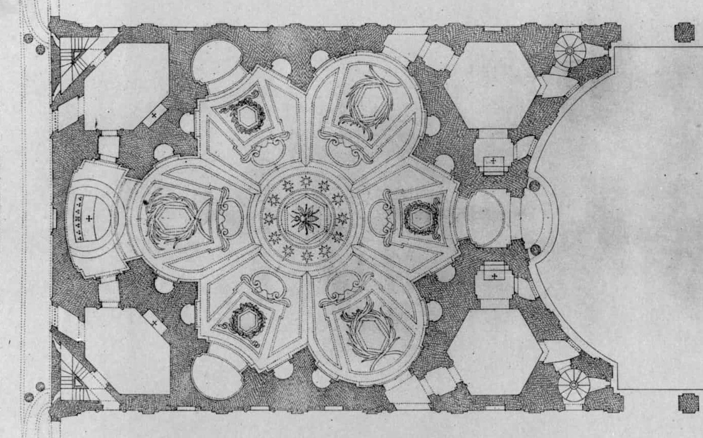
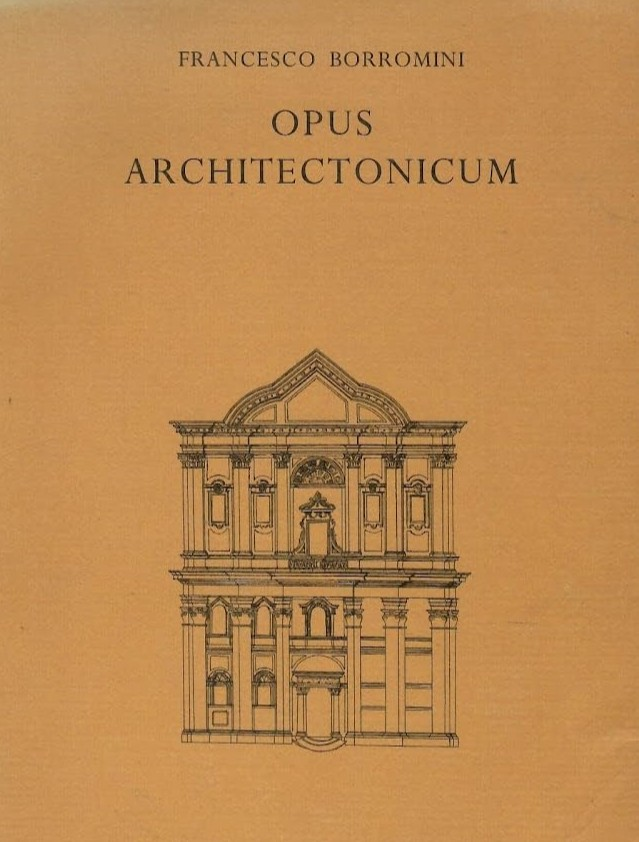

Legado e influencia
El genio redescubierto y su impacto en la arquitectura
Su uso de la geometría
El legado más profundo de Borromini no son solo sus edificios, sino su método. Rompió con la tradición renacentista de la proporción basada en el cuerpo humano y, en su lugar, basó toda su arquitectura en la geometría pura.
Creía que la geometría era la base racional de la arquitectura. Esta idea, usando formas complejas (elipses, estrellas, curvas), fue su mayor innovación, aunque le valió la incomprensión de sus contemporáneos.


Opus Architectonicum
Publicada póstumamente, esta es la única obra teórica de Borromini y su gran defensa intelectual. Es un análisis detallado de su obra maestra, San Carlo alle Quattro Fontane.
En ella, Borromini justifica su método, demostrando que sus diseños no eran "caprichos bizarros", sino el resultado de un rigor geométrico absoluto. Fue su respuesta documentada a sus críticos.
El duelo del Barroco: Bernini vs. Borromini
La historia del Barroco romano no puede contarse sin la intensa rivalidad entre sus dos titanes. Mientras Bernini representaba la opulencia y el favor papal, Borromini ofrecía una alternativa introspectiva y matemática.
Esta colisión de genios definió la cara de Roma. Mirá el documental para entender a fondo este fascinante conflicto.
¿Qué implicó su obra?
Borromini llevó al Barroco a su forma más audaz. Sus muros ondulados, el uso dramático de la luz y sus plantas complejas (como la de Sant'Ivo) rompieron las reglas del Renacimiento y crearon un nuevo lenguaje arquitectónico basado en el dinamismo y la emoción espacial.
El genio redescubierto
A pesar de su genio, Borromini murió sintiéndose un fracasado. Sus contemporáneos lo tildaron de "excéntrico", y su obra fue eclipsada por Bernini. No fue hasta los siglos XIX y XX que los historiadores modernos redescubrieron su trabajo, valorando su increíble audacia espacial y reconociéndolo como uno de los padres de la arquitectura moderna.